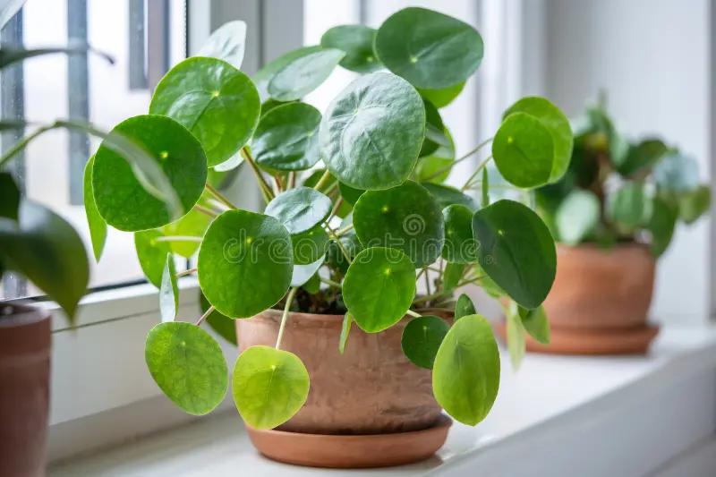
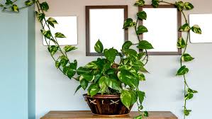
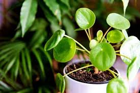
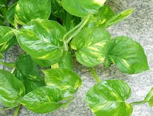
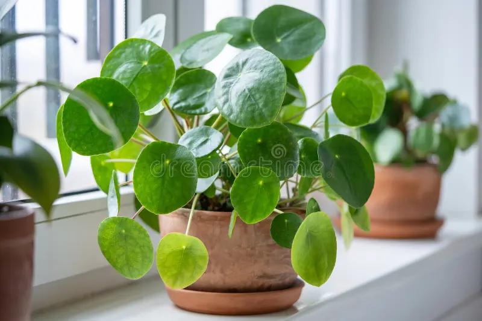
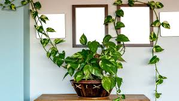
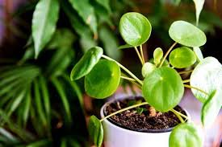
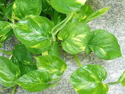

Money Plant is an extremely popular houseplant in India, climbing by means of aerial roots which adhere to surfaces. However, the plant can be grown virtually anywhere, even in water without soil, or completely away from light.
Plant Care
Watering: Water your money plant when the top inch of soil becomes dry .
Light : Provide bright, indirect light.
Propagation : Propagate using stem cuttings or air layering.
Pruning : Regularly trim and train your plant to maintain its shape.
Plant Benefits
Air purification : Money plants can remove pollutants like benzene, carbon monoxide, formaldehyde, and xylene from the air. They can also produce more oxygen and help with breathing. Anti-radiator Money plants can absorb harmful rays from computers, laptops, and mobile phones.
Stress reduction: Money plants can reduce stress and anxiety.
Ornamental value: Money plants are often used for decorating homes and offices.
Good luck : Money plants are considered lucky houseplants and are believed to bring good luck, wealth, and prosperity.
Vastu: According to Vastu, money plants are considered as good luck and should be placed in the southeast corner of the house to promote peace and a healthy environment.

 






